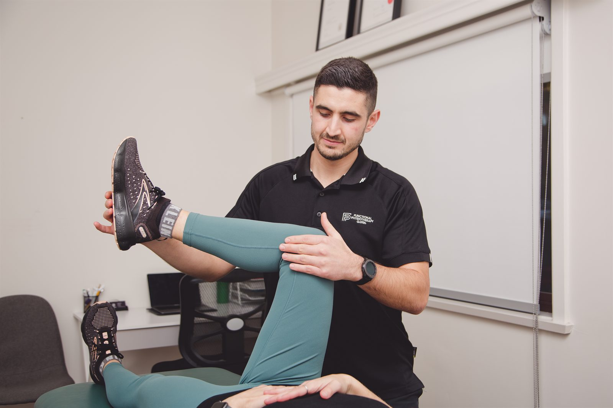

Physiotherapy for knee pain can address difficulties with stairs, walking, work or sport. We assess your knee at our Dapto clinic and plan rehabilitation around the cause of your symptoms and the activities you need to manage.

A knee can become sore after a twist, a change in activity or without a clear injury. Pain around the kneecap, a tendon problem, osteoarthritis and a ligament injury are not treated as the same condition.
These are examples to discuss at assessment, not a way to diagnose yourself. If you have an ACL diagnosis or are recovering from reconstruction, our ACL rehabilitation page covers that pathway in more detail.
We ask how the symptoms began, whether the knee swelled and whether it locks or gives way. Information about previous injuries and operations helps us decide which tests are appropriate.
The examination may include knee movement, strength and a task such as walking or a controlled step. We choose tests around your symptoms; there is no need to push through a movement you cannot manage safely.
If the findings suggest a fracture or a significant injury needing medical review, that takes priority. Otherwise, we explain the likely problem and agree on an initial rehabilitation plan. Existing scans can be useful, but they do not replace the examination.
Rehabilitation may include strengthening around the knee and hip, restoring movement and adjusting the amount of activity that brings on symptoms. The exercise starting point for a swollen knee will differ from the later demands of running or heavy work.
For knee osteoarthritis, tailored strengthening and general exercise are core treatments. Some discomfort can occur when exercise starts. We discuss how much is acceptable for you and how to adjust the plan if symptoms become difficult to manage. Hands-on care, if used, supports the exercise plan.
We can track changes using a task that matters to you, such as stairs or getting up from a chair. When your aim is sport, rehabilitation progresses towards the running, jumping or direction changes involved. Returning safely depends on the injury and demonstrated capacity, rather than a date alone.
Get urgent medical advice if you cannot bear weight, the knee is badly swollen or deformed, or it locks and will not straighten. A knee that repeatedly gives way or painfully catches also needs prompt assessment.
A hot, red knee with fever or feeling unwell may indicate infection and needs urgent medical attention. Do not wait for a routine physiotherapy booking.
Prehab, post-operative rehabilitation and criteria-based return to sport after an ACL injury.
Read moreServiceDiagnosis, load management and a staged return-to-running plan for runners of every level.
Read moreConditionAssessment of hip and groin symptoms affecting walking, sitting, exercise or sleep.
Read moreBring shorts or clothing that lets us examine the knee, plus any reports or post-operative instructions. Appointments are available at our Dapto clinic.